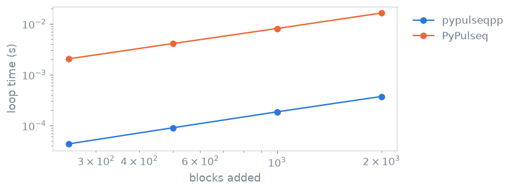

C++ core#
TL;DR
A script written for PyPulseq runs on a C++ sequence store after one changed import.
Block insertion, deduplication, file I/O, timing and analysis run natively; event design and some helpers remain PyPulseq’s.
A few upstream names are withheld, each with the reason it is not here.
A PyPulseq script builds a sequence in Python objects, which is slow when the sequence holds a million blocks. pypulseqpp keeps the PyPulseq vocabulary and moves the storage and the heavy loops into a C++ core, so the script you wrote for PyPulseq runs unchanged. The mental model: Python hands events across once per block, and everything after that happens in compiled code.
Capabilities#
Runs a PyPulseq script after
import pypulseqpp as ppreplacesimport pypulseq as pp.Show code and tests
Code:
Sequence,Opts,make_trapezoid(). Tests: every upstream name a script could write still resolves; the amplitude and slew defaults are upstreams (test_facade.py).Registers every event of a block in one native call, bound by hand to skip argument conversion.
Show code and tests
Code:
add_block(). Test: adding a block goes through the fast calling convention (test_sequence.py).Stores shapes, events and blocks natively, with 1-based libraries and block indices.
Show code and tests
Code:
Sequence. Test: the block table is read back without copying (test_sequence.py).Returns block-table arrays as snapshots that later edits do not reach.
Show code and tests
Code:
Sequence.block_durations,Sequence.block_events. Tests: a view is a snapshot that later writes do not reach; a view stays valid when the block table grows; a view outlives the sequence it was taken from (test_sequence.py).Deduplicates equal shapes and events, and detects the repetition from the result.
Show code and tests
Code:
remove_duplicates(),repetition(). Tests: collapsing duplicates makes the answer stale; dedup does not change RF instances (test_repetition.py,test_rf_instances.py).Drops a derived result when the sequence is edited.
Show code and tests
Code:
repetition(). Tests: adding a block makes the answer stale; retiming a block that plays events makes the answer stale (test_repetition.py).Writes Pulseq text and binary files byte-identical to the reference writer.
Show code and tests
Code:
write(),write_binary(),read(). Tests: the written file is byte identical to the reference; a file read back writes the same bytes (test_parity.py,test_read.py).Lets PyPulseq’s own functions take and return compiled events.
Show code and tests
Code:
calc_duration(),align(),split_gradient(),rotate(). Tests: upstreams own helpers take a compiled event; a helper gives back what the rest of the package wants; calc duration agrees with upstream (test_facade.py).Reads and writes files that PyPulseq reads and writes.
Show code and tests
Code:
write_binary(). Tests: they read a binary file we wrote; we read a binary file they wrote (test_interoperability.py).Refuses a name it withholds with the reason, not a bare
AttributeError.Show code and tests
Code:
add_ramps,add_custom_label. Test: a name that is not here says why (test_facade.py).
Division of responsibility#
Event design that is not reimplemented. Upstream’s own code answers where pypulseqpp has no replacement of its own; the interoperability wrapper converts events on the way in and out.
Unsupported areas stay unsupported. Automatic labelling and tiling are not implemented, and
add_rampsis withheld: it needscalc_ramp, which raises on any join needing intermediate points.traj_to_grad()solves the same problem.add_custom_labelhas no counterpart becausemake_label()takes any name.Shape codecs (
compress_shape,decompress_shape) are imported frompypulseq.
Method#

Time of a loop adding one trapezoid block per iteration, as the number of blocks grows, in pypulseqpp and in PyPulseq when it is installed. Measured when the page is built; the absolute times depend on the machine.#
Block insertion#
Sequence.add_block converts the events once, registers them and appends the
row to the block table in a single native call. The loop over blocks is yours;
every loop over the blocks of a finished sequence, such as timing, waveforms or
checks, is native. Substantial native work releases the GIL, so other Python
threads run meanwhile.
Snapshots and revision counting#
The block table is read back without copying: an array shares the table’s buffer, and the core copies the buffer before a later write while an array is out. The core also counts its edits. Derived analyses, such as the repetition, record the count they were computed at, so a cached result is checked by one comparison rather than by a per-block update.
Event interoperability#
A compiled event is not a PyPulseq namespace and fails PyPulseq’s type checks
and deepcopy. The wrapper converts arguments to namespaces and results back,
which is what lets the upstream namespace be used without forking it.
The rules, and how insertion cost is measured, are in C++ core internals.
Examples#
1. Your first gradient echo: a PyPulseq-style script on the compiled
Sequence.2. Echo and repetition time: the repetition the core detects.
Sequence and system limits: the container and its methods.